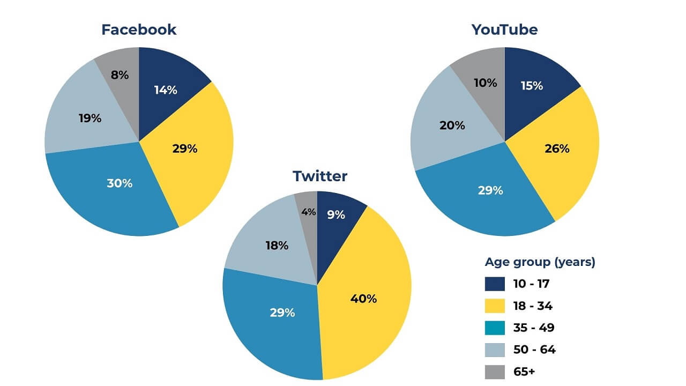

Đề bài
The pie charts show the proportion of users across different age groups on three apps: Twitter, Facebook and YouTube.

Nhấn vào ảnh để xem kích thước gốc.
Dữ liệu giả · không ghi database
Bản kiểm thử công khai
Bốn trường hợp dưới đây đã được gửi qua đúng prompt Draft. Đây không phải bài hoặc danh tính học viên thật.
The pie charts show the proportion of users across different age groups on three apps: Twitter, Facebook and YouTube.

Nhấn vào ảnh để xem kích thước gốc.
Viết bài
Draft 1 có thể dùng tiếng Việt hoặc tiếng Anh cơ bản trong <...>. Sau đó copy xuống Draft 2 và sửa thành bản hoàn chỉnh.